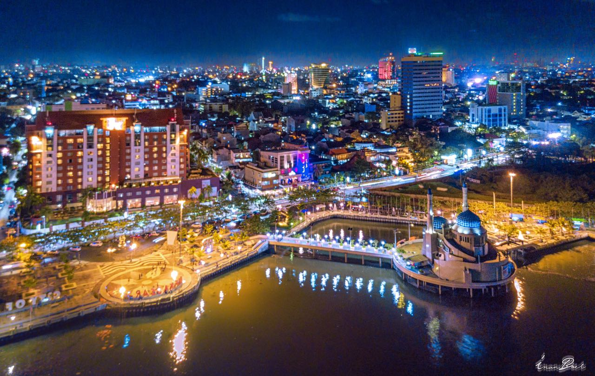

Selayang Pandang

Makassar bukan sekadar kota pelabuhan yang ramai — ia adalah simpul sejarah tempat perdagangan, budaya, dan kekuasaan bertemu selama berabad-abad. Dahulu dikenal dengan nama Ujung Pandang, Makassar mencapai puncak kejayaannya pada abad ke-16 dan 17 sebagai ibu kota Kesultanan Gowa-Tallo, salah satu kerajaan maritim terkuat di Indonesia bagian timur. Berkat letaknya yang strategis di jalur pelayaran antara Samudra Hindia dan Pasifik, Makassar tumbuh menjadi pusat perdagangan yang ramai, menarik pedagang dari Asia, Timur Tengah, hingga Eropa.
Di bawah kepemimpinan Sultan Hasanuddin, Makassar dikenal karena perlawanan gigihnya terhadap ambisi kolonial Belanda pada abad ke-17. Meski akhirnya berhasil ditaklukkan, kota ini tetap menjadi lambang keteguhan dan kebanggaan rakyatnya. Benteng Rotterdam yang ikonik, awalnya dibangun oleh Kesultanan Gowa dan kemudian diperluas oleh Belanda, masih berdiri hingga kini sebagai saksi bisu perjalanan sejarah itu.
Pantai Losari
Pantai Losari bukan hanya sekadar pantai — ia adalah jantung kota Makassar dan tempat di mana warga dan wisatawan melebur dalam pesona laut, budaya, dan kuliner. Terletak tepat di tengah kota, Pantai Losari telah menjadi ikon Makassar yang tak tergantikan, terkenal dengan panorama matahari terbenamnya yang memukau.
Meski bukan pantai berpasir seperti kebanyakan, Losari memikat dengan bentangan promenade yang luas, di mana pengunjung bisa berjalan santai, memancing, atau sekadar menikmati angin laut. Salah satu daya tarik utama Pantai Losari adalah pemandangan matahari terbenam yang dramatis, ketika langit Makassar berubah warna menjadi jingga keemasan, memantul di permukaan air yang tenang — momen yang tak pernah gagal memikat lensa kamera.
Benteng Rotterdam
Benteng Rotterdam bukan hanya bangunan bersejarah, ia adalah saksi bisu perjalanan panjang Makassar dari masa kejayaan kerajaan hingga era kolonial. Terletak di tepi barat kota Makassar, benteng ini merupakan salah satu benteng peninggalan terbaik dan terawat di Indonesia.
Masjid 99 Kubah
Masjid 99 Kubah adalah salah satu ikon terbaru dan paling mencolok di Makassar, yang memadukan kemegahan arsitektur modern dengan filosofi keislaman yang mendalam. Terletak di kawasan Center Point of Indonesia (CPI), masjid ini berdiri megah di tepi laut, menjadikannya landmark spiritual sekaligus destinasi wisata religi yang unik.
Pulau Samalona

Pulau Samalona adalah permata kecil yang terletak hanya sekitar 7 kilometer dari pesisir kota Makassar — sebuah pulau tropis yang menawarkan pesona laut jernih, pasir putih, dan kehidupan bawah laut yang memikat. Meski ukurannya hanya sekitar 2,34 hektare, Samalona menjadi destinasi favorit bagi wisatawan yang ingin melarikan diri sejenak dari hiruk-pikuk kota.